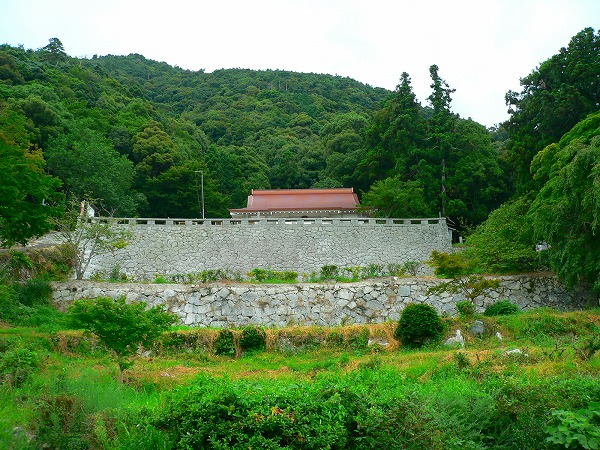
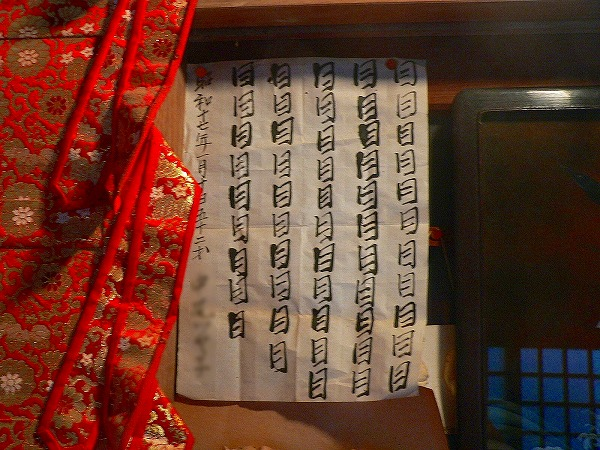
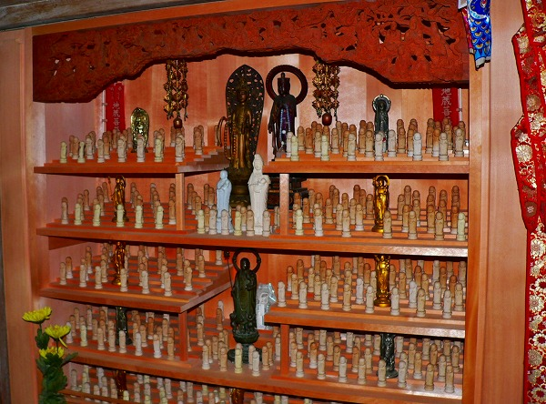
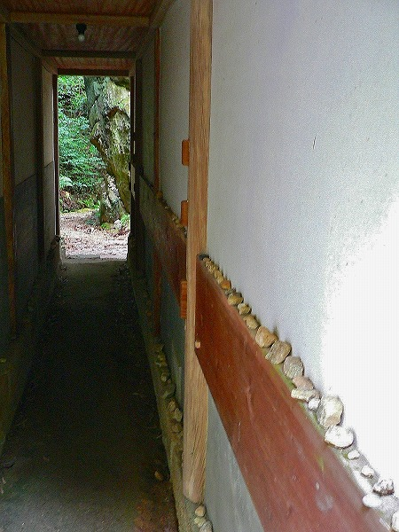

山口県の周防大島。
尊敬する宮本常一氏の故郷である。
その周防大島に
帯石観音なる寺院がある。

訪れてみると何やら物々しい城壁のような石垣が見えてくる。
比較的最近造られた石垣なれど、並々ならぬ意欲を感じる。

その石垣の先に階段が延びている。
上ってみると小さなお堂があり、その傍らに
巨大な自然石があった、
南無阿弥陀仏という文字が刻まれた巨石が鎮座していた。
これぞ帯石観音の本体の「帯石」である。
南無阿弥陀仏の六文字は元々
弘法大師がこの地を訪れた際に筆で書いたものと言われている。
その文字は金色の輝きを放ち、遠く四国からも見えたという。
ある時、とある石工がこのままでは墨書が消えてしまうのではないか、と心配し、その筆跡に合わせて今のようなカタチに陰刻したのだとか。
それ以来、この六文字は金色の輝きを放つことはなくなったという伝説が残っている。
折角、弘法大師の偉業を記録しようとしたのに…余計な事をしちゃったようですね。
巨石の中央を横切るような帯状の筋がお産の際の帯に似ているところから
安産の神様として信仰されている。
はたまた弘法大師が帯状の筋を彫ったという説もあるようですよ。
いずれにせよ、そのような伝説に由来して、ここは安産や子授にご利益のある観音様として信仰を集めているのだ。
堂内には安産を祈願する人によって奉納された千羽鶴などがどっさりと。
乳絵馬もある。

安産とは関係ないが目の祈願文も。
乳がんにならないように乳絵馬を祈願するのか。なるほど、それもアリか。

逆サイドには小さなお地蔵さんが沢山奉納されていた。

建物のちょっとした出っ張りに小石がズラリと並んでいた。
これもまた何かの願掛けなんだろうなあ。
この小石奉納が一番印象深かったっす。